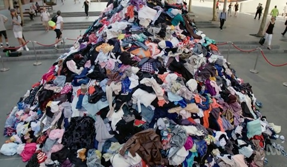

Continue Reading In Order To Prevent Your Clothes From Becoming This...

Swap
You can swap clothing items with friends and families which benfits both you and your friend/family.
Sell
You can organize a garage sale and promote it throughout your neighborhood. Or simply upload it on facebook pages that promote selling clothing items. Another way to re-sell your clothes is through apps like Poshmark or create your own website just to sell your own and other peoples clothes.
Donate
Find stores that are into textile recycling. Textile recycling is when clothing and fabrics are recovered for reuseable material. For example Chicago Texile Recycling is not just for clothing but soft toys and household textiles as long as they are clean,dry, and free of orors.
Buy For Less
If it's necessary then buy something new, but often times you can find what you need at many places for a good price.For example trift shops,garage sales, and online markets.